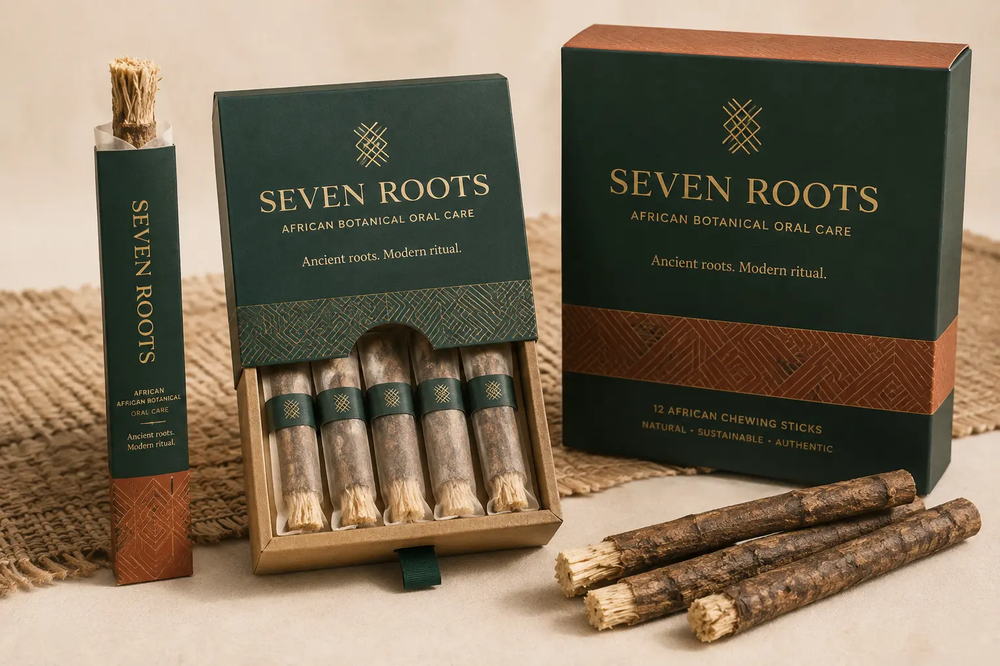
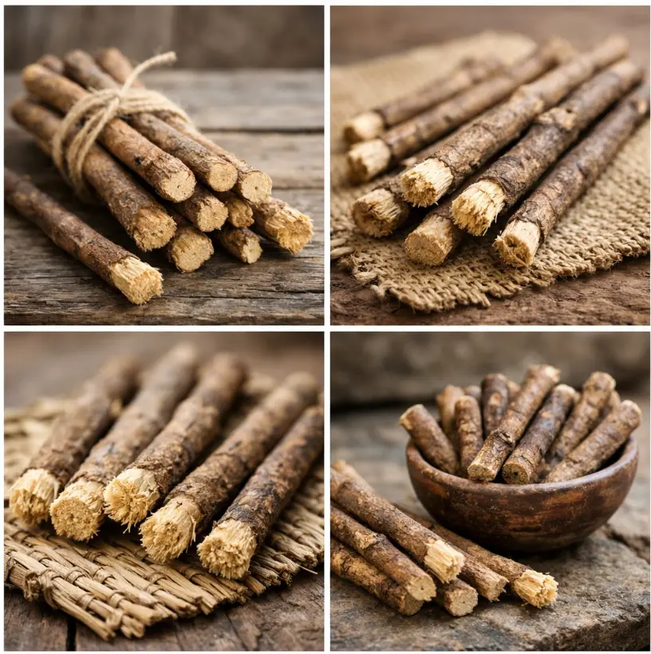
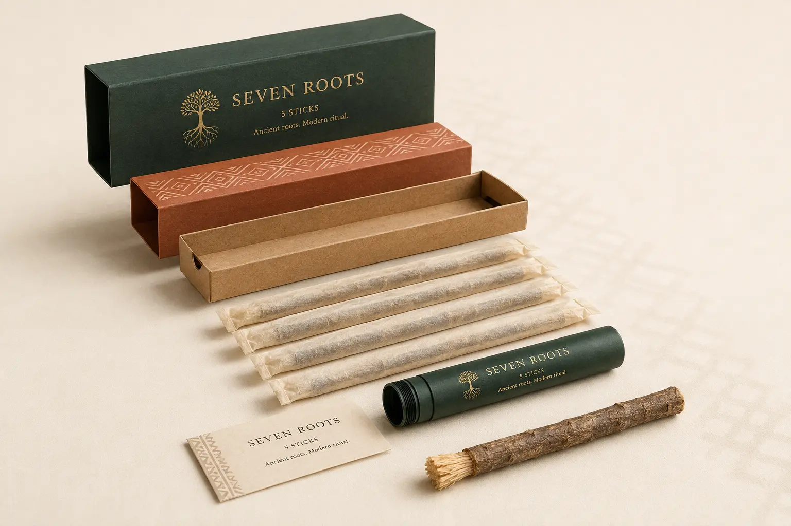

Travel Sleeve
One wrapped stick in a slim paper sleeve. Designed for trial, hospitality, travel, and sampling.
Loading price…African botanical oral care
Launch collection · Secure Stripe checkout
Natural chewing sticks turn plant fiber into a simple brush. SEVEN ROOTS presents the tradition with species traceability, hygienic wrapping, responsible sourcing, and clear guidance.

Ritual Pack
Five individually wrapped sticks
Traceable botanicals
Hygiene-first preparation
Low-waste ritual
Clear cultural context
The product story

A chewing stick is a twig, stem, or root prepared so one end can be softened into brush-like fibers. The fibers clean through careful mechanical brushing; botanical composition and taste vary by species and origin.
SEVEN ROOTS is built as a traceable premium system, not a single mystery stick. Every production batch is intended to identify the plant species, country and region of origin, harvest date, preparation method, microbial test status, and best-before date.
“Respect the ritual. Verify the root.”
Brand sourcing principleMechanical cleaning Soft fibers help disturb surface plaque when technique is correct.
Botanical character Flavor, aroma, and naturally occurring compounds depend on the authenticated species.
Portable ritual The stick can be used without a plastic handle and carried in a ventilated reusable tube.
Packaging architecture
Choose the format that fits your ritual. Prices are loaded directly from the secure product catalog and verified again by the server before checkout.
One wrapped stick in a slim paper sleeve. Designed for trial, hospitality, travel, and sampling.
Loading price…Signature format
Five hygienically wrapped sticks in a pull-drawer carton with guide card and optional travel tube.
Loading price…Twelve wrapped sticks with a recloseable paper band. Designed for repeat customers and households.
Loading price…Selected format: Daily Ritual
Interactive 360° product view
Drag or swipe to inspect the procedural 3D pack. Select a component to highlight its role, material, and production requirement.

SR-R05 · Signature format
Five hygienically wrapped chewing sticks in a pull-drawer carton, paired with a reusable ventilated travel tube and a clear ritual guide.
The front, top, and visible-side proportions follow the current packaging direction. Unseen rear and underside geometry are inferred for rotation and remain subject to packaging engineering.
Exploded view
The pack separates into a protective sleeve, structural paper band, kraft tray, breathable wraps, reusable travel tube, and a simple instruction card.
Outer sleeveMatte paperboard with low-ink foil detail.
Four-step ritual
Rinse the stick. Trim or peel roughly 1–1.5 cm (about half an inch) of bark from one end.
Chew the exposed end gently until the inner fibers separate into a soft, even brush.
Use light, controlled strokes on tooth surfaces and along the gumline. Avoid forceful scrubbing.
Rinse and air-dry after use. Trim worn fibers and prepare a new section as needed.
Botanical collection
Names such as miswak, pako, orin ata, sɛpɛ, and sokodua can identify traditions or market categories. Commercial packaging must also carry an authenticated botanical name and origin.
Salvadora persica
Known for a distinctive, slightly pungent botanical taste. It is the most researched chewing-stick species and is widely used across East and North Africa, the Middle East, and Muslim communities worldwide.
Azadirachta indica
A distinctly bitter botanical used in multiple traditional hygiene systems. The product story should center on verified origin and sensory character; therapeutic language requires product-specific substantiation.
Species declared by batch
Regional names may cover different plants and local preparations. This collection must never rely on a common name alone: each retail lot needs a botanist-verified Latin name, origin, and safe-use specification.
Trust before claims
Botanical name, plant part, source country and region, supplier, harvest window, and lot number.
Moisture, microbial, heavy-metal, pesticide, foreign-material, and packaging-integrity specifications.
Clear preparation steps, storage conditions, replacement guidance, age/supervision note, and irritation warning.
Only make benefit claims supported for the exact species, finished product, intended use, and target market.
Identity system
The mark combines seven brush fibers above the stem with branching roots below. It reads as tree, toothbrush, and origin without relying on a continent silhouette or borrowed sacred symbol.
Choose a swatch to copy its HEX value.
Trade and sourcing
Retailers, hospitality partners, distributors, press, and responsible botanical suppliers can send a direct pre-launch inquiry. Every message is stored privately for the SEVEN ROOTS team.
Ancient roots. Modern ritual.